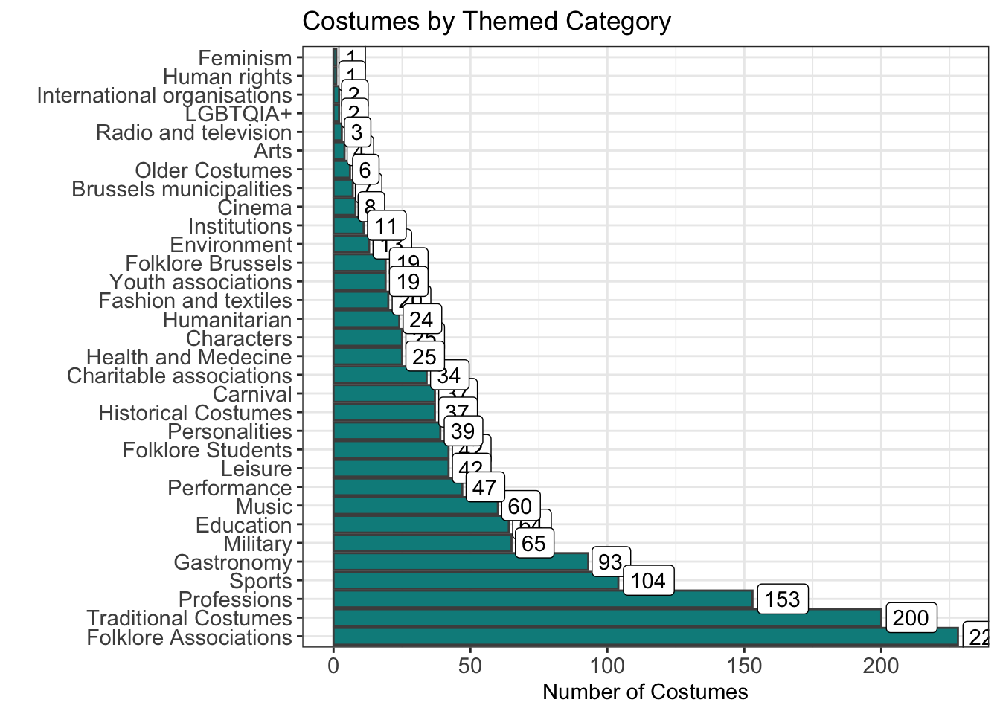
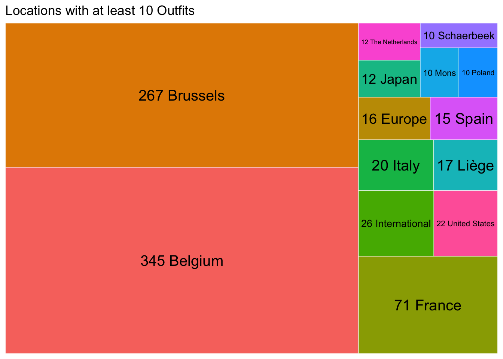

library(jsonlite)
library(tidyverse)
# Saved this xlsx from google sheets -- get ref info on geo and theme IDs
ref_theme <- readxl::read_xlsx('manneken-pis-costumes-ref.xlsx',sheet='theme') %>%
separate(name,into = c('trash','id','wip'),sep = "\"") %>%
separate(wip, into = c('trash2','theme','trash3','trash4'),sep=">|<") %>%
select(-starts_with('trash'))
ref_geo <- readxl::read_xlsx('manneken-pis-costumes-ref.xlsx',sheet='geography') %>%
separate(name,into = c('trash','id','wip'),sep = "\"") %>%
separate(wip, into = c('trash2','geo','trash3','trash4'),sep=">|<") %>%
select(-starts_with('trash'))
# Load JSONs from file, parse + merge into one df, with ref info attached
costume_theme <- fromJSON("/Users/carobuck/Documents/fun_projects/manneken-pis/theme_to_costumes.json")
costume_location <- fromJSON('/Users/carobuck/Documents/fun_projects/manneken-pis/location_to_costumes.json')
# deal w/ themes
list_of_dfs_no_extra <- lapply(costume_theme, function(df) {
df[, !names(df) %in% c("t_s")]
})
list_of_dfs_with_id <- imap(list_of_dfs_no_extra, ~ mutate(.x, id_theme = .y))
combined_df_costume <- bind_rows(list_of_dfs_with_id)
# deal w/ geo
list_of_dfs_no_extra <- lapply(costume_location, function(df) {
df %>% mutate(body = as.character(body)) %>%
select(-t_s) -> df
return(df)
})
list_of_dfs_with_id <- imap(list_of_dfs_no_extra, ~ mutate(.x, id_geo = .y))
combined_df_geo <- bind_rows(list_of_dfs_with_id)
# combine + clean up df
combined_df_costume %>%
full_join(combined_df_geo) %>%
full_join(ref_geo,by=join_by(id_geo==id)) %>%
full_join(ref_theme,by=join_by(id_theme==id)) %>%
mutate(t = str_trim(t),
body = str_trim(body)) %>%
distinct() -> clean_dataManneken Pis Data Wrangling
Who is Manneken Pis? He’s got a lot of costumes, and I couldn’t find a dataset anywhere that listed all the costumes. I felt that one needed to exist.
Trying to get data from website, or premade database or scraping was a nightmare (selenium, Docker, UGH.) So, went hunting through HTML manually and found some long lists with all the costume info (both the full descriptions of the costumes, plus reference values for theme and geo location). Parsing/assembling together here.
Link to google sheet with ref info (downloaded as xlsx) here
All costumes found/scraped from this site
Get a glimpse of what the data look like now:
clean_data %>% glimpse()Rows: 1,480
Columns: 7
$ id <chr> "3616", "3388", "3134", "3036", "3666", "3232", "3722", "2403…
$ t <chr> "\"Grand conseiller de la Confrérie Saint-Etienne\"", "Armail…
$ body <chr> "-1", "<p>Costume presented on the occasion of a chapter held…
$ id_theme <chr> "3304", "3304", "3304", "3304", "3304", "3304", "3304", "3304…
$ id_geo <chr> "3336", "3347", "3587", "3455", "3336", "3599", "3442", "3335…
$ geo <chr> "France", "Switzerland", "Pauillac", "Schaerbeek", "France", …
$ theme <chr> "Gastronomy", "Gastronomy", "Gastronomy", "Gastronomy", "Gast…Make some quick charts from the data
library(treemapify)
clean_data %>%
#count(geo,theme) %>%
count(theme) %>%
filter(!is.na(theme)) %>%
ggplot(aes(y=n,x=fct_rev(fct_reorder(theme,n)))) +
geom_col(fill='cyan4',color='gray30') +
geom_label(aes(label=n),hjust = -0.1) +
coord_flip() +
theme_bw() +
labs(y='Number of Costumes',x='',title='Costumes by Themed Category') +
theme(axis.text = element_text(size=11)) 
clean_data %>%
#count(geo,theme) %>%
count(geo) %>%
filter(n>=10) %>%
ggplot(aes(area = n, fill = geo, label = paste(n,geo))) +
geom_treemap(color='white') +
geom_treemap_text(colour = "black",
place = "centre",
size = 15) +
theme(legend.position = 'none') +
labs(title='Locations with at least 10 Outfits')
Get stats for total number of locations and # themes
clean_data %>%
count(theme) theme n
1 Arts 4
2 Brussels municipalities 7
3 Carnival 37
4 Characters 25
5 Charitable associations 34
6 Cinema 8
7 Education 64
8 Environment 13
9 Fashion and textiles 20
10 Feminism 1
11 Folklore Associations 228
12 Folklore Brussels 19
13 Folklore Students 42
14 Gastronomy 93
15 Health and Medecine 25
16 Historical Costumes 37
17 Human rights 1
18 Humanitarian 24
19 Institutions 11
20 International organisations 2
21 LGBTQIA+ 2
22 Leisure 42
23 Military 65
24 Music 60
25 Older Costumes 6
26 Performance 47
27 Personalities 39
28 Professions 153
29 Radio and television 3
30 Sports 104
31 Traditional Costumes 200
32 Youth associations 19
33 <NA> 45clean_data %>%
count(geo) geo n
1 Aalst 3
2 Africa 4
3 Albania 1
4 Alkmaar 2
5 Amersfoort 3
6 Amsterdam 4
7 Anderlecht 5
8 Antwerp 4
9 Antwerpen 1
10 Appollonia 2
11 Arendonk 1
12 Arezzo 1
13 Argenteuil 2
14 Argentina 3
15 Arles 1
16 Arlon 4
17 Armenia 1
18 Arolsen 1
19 Asia 4
20 Asse 1
21 Ath 1
22 Auch 1
23 Audergem 1
24 Austria 5
25 Azerbaijan 1
26 Basel 2
27 Bassoles-Aulers 2
28 Bastogne 4
29 Beauvechain 1
30 Belgium 345
31 Bergen op Zoom 3
32 Biarritz 2
33 Bilbao 1
34 Binche 5
35 Bolivia 2
36 Bombay 1
37 Bouillon 2
38 Brabant-Wallon 1
39 Braine le Château 2
40 Brasschaat 2
41 Brazil 4
42 Bredene 2
43 Brussels 267
44 Brussels Capital 4
45 Budapest 2
46 Bulgaria 2
47 Burundi 2
48 Canada 8
49 Caughnawaga 1
50 Central Africa 1
51 Central America 1
52 Charleroi 2
53 Chaudfontaine 2
54 Chile 1
55 China 7
56 Chièvres 1
57 Châtelet 1
58 Cilaos 1
59 Ciney 2
60 Ciociari 1
61 Colmar 1
62 Cologne 4
63 Colombia 2
64 Comines-Warneton 1
65 Condom-en-Armagnac 2
66 Congo 7
67 Costa Rica 1
68 Couvin 1
69 Coxyde 2
70 Croatia 1
71 Cuba 2
72 Cyprus 1
73 Czechoslovakia 1
74 Dallas 1
75 Dax 1
76 Denmark 6
77 Digne 1
78 Dinant 6
79 Dominican Republic 1
80 Douai 2
81 Dublin 1
82 Dubrava 1
83 Duisburg 2
84 Düsseldorf 1
85 Ecuador 3
86 Eeklo 1
87 Eigenbrakel 2
88 El Salvador 1
89 Ellezelles 3
90 Estaimpuis 2
91 Estonia 2
92 Etterbeek 1
93 Eupen 2
94 Europe 16
95 Evere 2
96 Finland 4
97 Fleurus 2
98 Florence 1
99 Florenville 1
100 Fontainebleau 2
101 Forchie-la-Marche 2
102 Fosse 5
103 France 71
104 Fécamp 2
105 Gdansk 1
106 Geel 1
107 Gembloux 2
108 Geneva 1
109 Genk 1
110 Georgia 3
111 German Democratic Rep. 1
112 Germany 3
113 Gerpinnes 1
114 Ghent 5
115 Gijon 1
116 Grammont 4
117 Grasse 1
118 Greece 3
119 Groningen 1
120 Gruyère 1
121 Guatamala 1
122 Gussignies 2
123 Haaksbergen 1
124 Hainaut 1
125 Ham-sur-Heure 1
126 Haren 4
127 Hasselt 4
128 Hawaï 1
129 Helsinki 2
130 Henegouwen 1
131 Herquegies 1
132 Herseaux 1
133 Hirson 1
134 Hoeilaart 1
135 Honduras 1
136 Honolulu 2
137 Hungary 2
138 Hélécine 1
139 Ibiza 1
140 India 2
141 Indonesia 2
142 International 26
143 Ireland 1
144 Israel 3
145 Italy 20
146 Ittre 2
147 Jamaica 1
148 Jambes 1
149 Japan 12
150 Jargeau 2
151 Jerez de la Frontera 2
152 Jerusalem 2
153 Jette 1
154 Jodoigne 2
155 Jumet 2
156 Kazakhstan 1
157 Kelmis 1
158 Kenya 2
159 Korea 2
160 Kuwait 1
161 Kyrgyzstan 1
162 L'Hay-les-Roses 2
163 La Flèche 2
164 La Louvière 1
165 La Roche en Ardenne 2
166 Laken 1
167 Latvia 1
168 Le Roeulx 2
169 Libanon 1
170 Lille 4
171 Limburg 1
172 Limelette 2
173 Lisbon 1
174 Lithuania 2
175 Liège 17
176 Llanes 2
177 Lleida 3
178 Lodelinsart 2
179 Los Angeles 1
180 Louvain-la-Neuve 1
181 Lucca 2
182 Lund 3
183 Luxembourg 1
184 Luxemburg 3
185 Lyon 2
186 Maastricht 2
187 Madrid 3
188 Mali 1
189 Malmedy 2
190 Malta 1
191 Marostica 1
192 Marquise Islands 2
193 Marville 2
194 Melle 2
195 Merchtem 4
196 Mexico 5
197 Mirande 2
198 Mol 1
199 Moldavia 1
200 Monaco 2
201 Moncrabeau 1
202 Mongolia 1
203 Mons 10
204 Montenegro 1
205 Montreal 2
206 Moorea 1
207 Morocco 3
208 Moscow 1
209 Moulbaix 2
210 Mouscron 1
211 Moux 2
212 Munster 1
213 Namur 6
214 Neder-Over-Heembeek 4
215 Neurenburg 2
216 New York 1
217 Nicaragua 1
218 Nice 1
219 Nieuwpoort 2
220 Niger 2
221 Nishinomiya 1
222 Nivelles 2
223 Nogent-sur-Marne 2
224 North America 1
225 Norway 4
226 Nuoro 1
227 Nîmes 2
228 Oceania 1
229 Oost-Vlaanderen 1
230 Oostduinkerke 2
231 Osaka 1
232 Ostend 2
233 Panama 1
234 Papantla 1
235 Paris 9
236 Pauillac 2
237 Peizegem 1
238 Perpignan 2
239 Peru 3
240 Philippines 1
241 Poitiers 1
242 Poland 10
243 Pora Pora 2
244 Portugal 6
245 Quaregnon 1
246 Quebec 1
247 Quimperlé 3
248 Reims 4
249 Renaix 1
250 Riga 1
251 Rochefort 3
252 Roeselare 2
253 Romania 6
254 Ronse 2
255 Russia 6
256 Rwanda 1
257 Saint-Quentin 1
258 Samur 1
259 Saragoza 1
260 Schaerbeek 10
261 Serbia 1
262 Singapore 2
263 Slovakia 1
264 Slovenia 1
265 South Africa 2
266 South America 1
267 South Korea 3
268 Souvret 2
269 Spa 2
270 Spain 15
271 Sri Lanka 1
272 St.-Cécile 1
273 St.-Emilion 2
274 St.-Gille 1
275 St.-Maxim 1
276 St.-Troyan 1
277 Stavelot 1
278 Strassburg 1
279 Sully-sur-Loire 1
280 Sweden 1
281 Switzerland 3
282 Tahiti 1
283 Taiwan 1
284 Tallin 1
285 Thailand 1
286 The Netherlands 12
287 Theux 2
288 Thieulain 1
289 Thuin 4
290 Tokyo 3
291 Tongeren 2
292 Toulouse 1
293 Tournai 5
294 Troyes 1
295 Tunisia 4
296 Turkey 2
297 Turnhout 3
298 Uccle 7
299 Ukraine 3
300 United Arab Emirates 3
301 United Kingdom 9
302 United States 22
303 Uruguay 2
304 Uzbekistan 1
305 Valencia 3
306 Venezuela 1
307 Verviers 2
308 Vienna 2
309 Viesalm 2
310 Vietnam 1
311 Villers-la-Ville 1
312 Virton 2
313 Virton-Lateau 2
314 Vlaams Brabant 1
315 Vlaanderen 1
316 Waimes 2
317 Wallonie 1
318 Wavre 2
319 Weert 1
320 West-Vlaanderen 1
321 Woluwe-st.-Lambert 3
322 Woluwé-St.-Pierre 1
323 Wolvertem 1
324 World 1
325 Wépion 2
326 Ypres 1
327 Yugoslavia 1
328 Yukata-Ori 1
329 Zelzate 2
330 <NA> 3What would I do with more time?
- Clean up/consolidate geo locations (a lot of subregions, where are all of these places? correlation to theme?)
- NLP on costume title and description (very messy rough text fields currently)
- Background research on what some of the groups/titles mean (a lot I’ve never heard of)
- Prettier visualization; perhaps interactive with more data incorporated